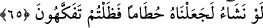
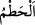
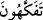
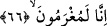

müstehaptır. Sonra şunları söyler: “Eken, bitkileri bitiren ve ulaştıran Allah’tır.
Allahümme salli ala Muhammed. Allahım bizi onun meyvesiyle rızıklandır, zararından
uzaklaştır ve bahş ettiğin nimetlerden dolayı bizi şükreden kullarından eyle.”
Denilir ki, bu duâ ekilen ekin için bütün âfetlerden emniyete; çekirge, kurt ve benzeri
âfetlerden emin olunmasına vesîledir.
Âyet-i kerîmede ekin bitirme nimetinden dolayı kullardan Allah’a minnetle
şükretmeleri istenmekte ve bitkileri bitirmeğe kadir olan Allah’ın yeniden diriltmeye de
kadir olduğuna delâlet edilmektedir. Allah Teâlâ yere ekilen taneleri bitirdiği ve
rahimdeki meniye can verdiği gibi, kuyruk sokumu kemiğinden de insanı öylece diriltip
kabirden kaldırır. Çünkü bunların hepsi tanedir, tohumdur. Daha önce de ifâde ettiğimiz
gibi kuyruk sokumu kemiği hardal tanesi büyüklüğündedir.
65. Dileseydik onu kuru bir çöp yapardık da şaşar kalırdınız.
“Dileseydik…” edâtı burada her ne kadar muzâri bir fiilin başına gelmişse de mâzi
içindir. Bu sebeple muzâri fiili cezm etmemiştir. “Onu” ekilmiş ekini “kuru bir çöp
yapardık.” Âyet-i kerîmede geçen
(hatm) kelimesi heşm gibi herhangi bir
maddenin kırıntısı demektir. Buna göre mânâ şöyle olur: “Biz dileseydik o ekini
ürünlerini toplayıp yığmak üzere tamah ettiğiniz bir hale getirdikten sonra kupkuru,
çerçöp yapardık. Bu sebeple “de şaşar kalırdınız.” Yâni o ekini en güzel hâliyle
gördükten sonra göreceğiniz kötü durumu nedeniyle şaşar kalırdınız. Veya o ekin için
yaptığınız masraf ve verdiğiniz emekten dolayı pişman olurdunuz. Ya da o ekinden
dolayı işlemiş olduğunuz günahlardan pişman olur, tevbe ederdiniz.
Âyet-i kerîmede geçen
(tefekküh) kelimesi çeşitli meyveleri atıştırmak anlamında
olup bu fiil “sözleri ağızda gevelemek” mânâsında istiâre olarak kullanılmıştır.
Tefekkehûn fiili nûn ile de okunmuş olup mânâsı: “Hayret etmek düşünmek ve nâdim
olmak”tır. Nitekim bu kelime şu hadis-i şerifte sözü edilen mânâda kullanılmaktadır:
Âlimler sıcak kaynaklı ve hastaların şifâ umdukları bir pınar gibidir. Uzaktakiler ona
gelirler, yakındakiler ise onu terk ederler. Bu pınarın suyu kuruyuverse ondan
faydalanmış olanlar üzülür, pişmanlık duyarlar.
Hadiste geçen humme kelimesi, hastaların kendisinden içip şifâ umdukları sıcak su
kaynağı demektir.